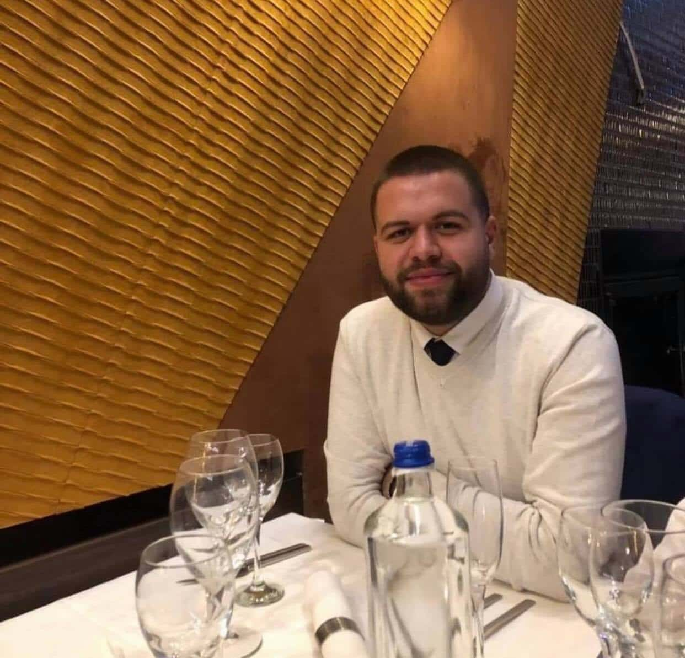

PROFESSIONAL DETAILS
| NAME: | Gëzim Kastrati |
| AGE: | 22 Years |
| LOCATION: | Gjilan, Kosovo |
| EXPERIENCE: | 3 Years |
| DEGREE: | BA (Ongoing) |
I started working in Kosbit L.L.C. as a network engineer in June of 2018 and I still work there.
I'm a highly skilled technology enthusiast with great ability in computer systems and a smart and hardworking individual with a focused bent of mind and a drive of passion in challenges, who believes in giving the best to the organization. During the years I have gained experience in networks & systems with in depth knowledge on router configuration, routing protocols, configurations of VLANs, load balancing, server administration, operating systems, backups, active directory, IT infrastructure, etc.
Highly praised by his local Team Lead for his extraordinary performance in Vodacom project for upgrading Coriant routers in South Africa. Currently involved in multiple Cisco, Juniper, and Microsoft Certifications.